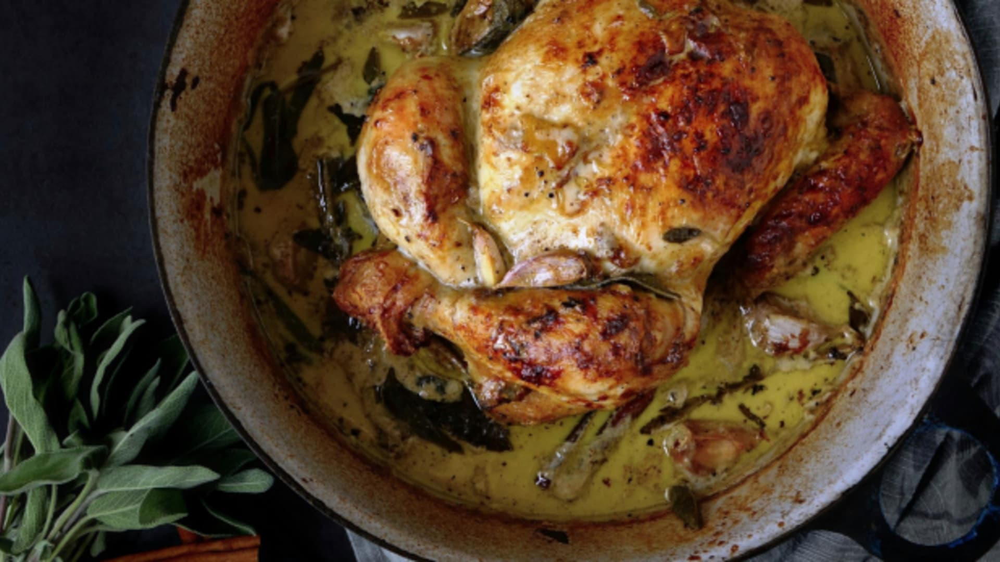

Kuře

Popis
Frgál je tradiční krajovou specialitou Valašska, která si získala oblibu po celé republice.
Zkuste si připravit výborné koláče s hruškami, tvarohem, povidly nebo mákem!
Ingredience
- celé kuře 1ks
- mletý kmín 1 špetka
- vepřové sádlo 3 vrchovaté lžíce
- sůl 1 lžička
Postup
- Předehřejte troubu na 220 °C. Celé kuře omyjte pod studenou tekoucí vodou, nezapomeňte dobře vypláchnout také břišní dutinu. Přebytečné kousky kůže neodstraňujte, budou se parádně hodit na nádivku.
- Rohlíky nakrájejte na kostky o velikosti asi jeden centimetr. Mléko nebo vývar smíchejte se žloutky a rozpuštěným, avšak jen vlažným máslem. Nalijte tuto směs na rohlíky a nechte chvíli odpočinout. Mezitím ušlehejte sníh z bílků a ze špetky soli. K namočeným rohlíkům vmíchejte ořechy, sůl, prolisovaný česnek a petržel. Nakonec přidejte ušlehaný sníh a opatrně ho do směsi vmíchejte – nejlépe to jde tak, když velkou lžící nebo stěrkou podebíráte směs ode dna mísy a překládáte ji přes sníh nahoře. Touto nádivkou (nenechte se zmást konzistencí, vajíčka dokážou při pečení pojmout opravdu hodně tekutiny) naplňte část břišní dutiny, vecpěte ji pod kůži na prsou a napěchujte jí i kůži na krku. Ze zbytku udělejte válečky – když se vám nádivka lepí až na paty, namočte si ruce do studené vody, pomůže to – a omotejte je slaninou. Nemáte-li na to dost času nebo trpělivosti, vymažte máslem formu na chlebíček nebo srnčí hřbet, přemístěte do ní zbytek nádivkové hmoty a navrch rozložte všechny plátky slaniny do nějakého rytmického vzoru.
- Upečené kuře vyndejte z trouby a celý pekáček i s masem zakryjte alobalem. Počkejte 5 minut, maso si odpočine a bude se lépe krájet. Pak teprve kuře libovolným způsobem nakrájejte (nasekejte, natrhejte) a případně také odeberte přebytečnou kůži.
Home